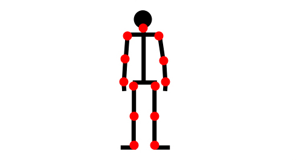
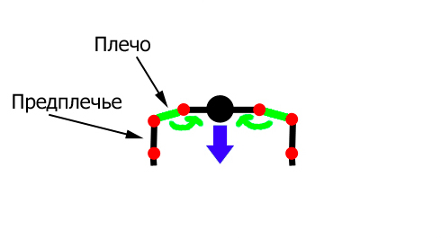
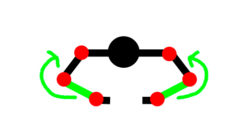

We do not know if you were good at physics and if you liked this subject at school, but after today's post your attitude towards it will definitely change. Because if you look deeply into all the exercises, you can find a curious thing - they are all built on the principles of Newtonian mechanics! And it is the mechanics that determines how effective this or that exercise will be for a particular muscle group.
Let's start with a look at a schematic image of a person. The main joints are marked with red, as all the movements occur precisely in them. As you know, the muscles are attached to the bones (with the help of tendons). Meanwhile our body is so wonderfully created, that for each joint there are two muscle groups (antagonists) that allow us to perform circular movements in opposite directions.

The rotational load, which sets everything in motion, is called the moment of force and is equal to the product of the force itself into its arm. In this sense an “arm” means the shortest distance from the line, along which the force passes, to the axis of rotation.
Let’s discuss it using the example of the push-ups from the floor with the standard hands setting:

We can see that the gravitation force, that affects an athlete, passes through the three joints - the shoulder, elbow and wrist joints. At the same time, the load decreases as the force passes through the each next joint. That is, the main load goes to the shoulder joint (and, accordingly, the pectoral muscles), and the triceps do not receive enough of load, since the flexion load in the elbow joint is minimal.
Is it possible to change the technique of push-ups in such a way as to increase the load on the triceps? Certainly, since now we know that it is necessary to create a rotational moment, aimed at bending at the elbow joint. Then the triceps will get involved into the work, resisting such an effort. To achieve this effect, it is necessary to make sure that the force of gravity got an “arm” respective to the elbow joint. This can be achieved, for example, by moving your hands closer to each other.

It would seem that we only slightly changed the position of the hands, but at the same time we’ve managed to increase significantly the load on the triceps and to make the exercise more targeted! And there is a great number of such moments! Therefore, if you want your workouts to be effective, you have always to think of what, how and why you are doing, trying to get the most out of every repetition in every set!